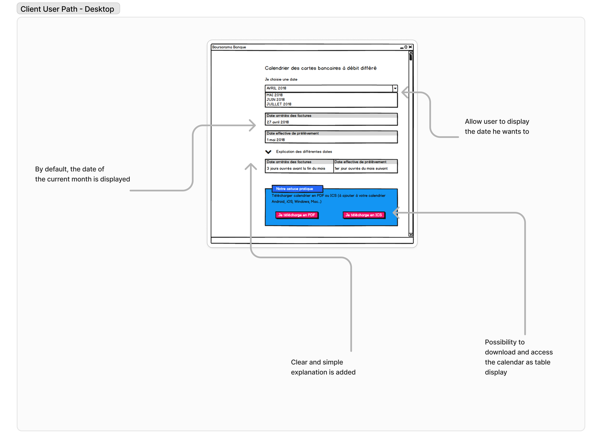
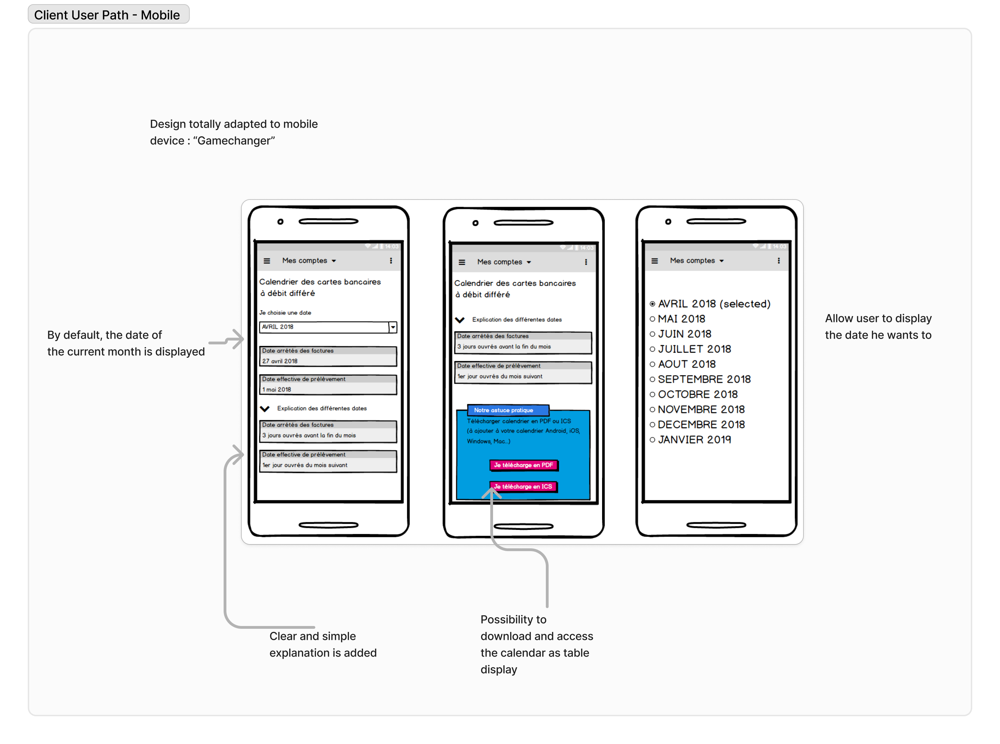
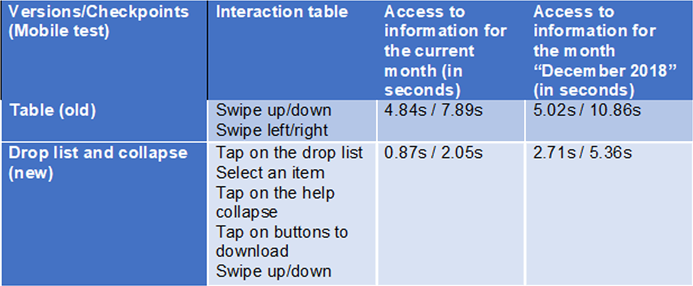

Calendrier à Débit Différé
Rôle : UX/UI Designer | Application bancaire Boursorama Banque
Améliorer la lisibilité et l’usage d’un outil bancaire consulté par des millions de clients chaque mois.
Contexte & Enjeux
L’outil Calendrier à Débit Différé affichait les dates de prélèvement et de débit dans un tableau dense, difficile à lire — surtout sur mobile. Résultats : incompréhension des échéances, erreurs de gestion budgétaire, et augmentation des appels au support client.
- 🔍 Rendre les informations bancaires plus claires et hiérarchisées
- 📱 Optimiser l’expérience mobile pour un usage quotidien
- ✅ Réduire les sollicitations au service client
Mon rôle
En tant qu’UX/UI Designer, j’ai mené l’audit de l’interface existante, l’analyse des retours clients et la refonte complète du parcours. J’ai conçu le nouveau carrousel dynamique (vue mensuelle simplifiée, focus sur les dates clés), réalisé les maquettes sur Axure, et validé les choix via des tests utilisateurs menés auprès de profils variés (salariés, retraités, étudiants).
Résultats & Impact
- ✅ Satisfaction utilisateur doublée après refonte
- ✅ +60 % d’interactions sur mobile
- ✅ Réduction notable des demandes liées aux dates de débit
Idéation & Prototypage
Liens vers les maquettes Axure :
💻 Version desktop 📱 Version mobileDesign final

Deferred Debit Calendar
Role: UX/UI Designer | Banking App – BoursoBank
Improving clarity and usability for a banking feature used by millions of customers every month.
Context & Challenges
The Deferred Debit Calendar displayed key payment and debit dates in a dense table, making it hard to read — especially on mobile. As a result: confusion about due dates, budgeting errors, and a spike in customer support requests.
- 🔍 Make financial information clearer and better structured
- 📱 Optimize the mobile experience for daily use
- ✅ Reduce support requests related to debit date misunderstandings
My Role
As a UX/UI Designer, I conducted a full audit of the existing interface, analyzed user feedback, and led the end-to-end redesign process. I created a new dynamic carousel view (clean monthly layout with focus on key dates), built responsive mockups in Axure, and validated the design through user testing with diverse profiles (employees, retirees, students).
Results & Impact
- ✅ User satisfaction doubled after the redesign
- ✅ +60% increase in mobile interactions
- ✅ Significant drop in support requests related to debit dates
Ideation & Prototyping
💻 Desktop version 📱 Mobile versionFinal design
Mon rôle dans ce projet et ressenti global
En tant que Designer UX stagiaire chez BoursoBank, j'ai eu l'opportunité de travailler avec deux équipes distinctes :
- ✅ En tant que Designer UX/UI Principal (pendant 6 mois) pour le Service Client : mon stage a permis à BoursoBank d’allouer une ressource dédiée au Service Client (avant cela, l'équipe d'infographie était presque exclusivement mobilisée par le département Marketing).
- ✅ En tant que Designer UX/UI (pendant 1 mois) dans l'équipe UX du département Marketing : j'ai travaillé sur 2 à 3 projets à la fin de mon stage.
Mes deux principaux défis : comprendre le domaine bancaire et les besoins utilisateurs, et appliquer mes compétences acquises en UX après mon Master. Heureusement, j’ai été bien accompagné, et ce stage a été un vrai succès.
Problématique
Après quelques semaines dans l'équipe du Service Client, j’ai identifié plusieurs pistes d’amélioration. L'une des premières concernait l’affichage du calendrier de débit différé des cartes bancaires. Il se présentait sous forme de tableau statique, très peu adapté au responsive design. J’ai proposé une nouvelle version plus claire, basée sur des recherches utilisateurs, des entretiens et l'expérience d’un collègue. J’étais Designer UX Principal sur ce projet.
Contexte et Enjeux
L’ancien affichage du calendrier posait de nombreux problèmes : tableau figé, absence de hiérarchie visuelle, difficultés de lecture sur mobile. Trouver la ligne correspondant au mois en cours était laborieux, surtout sur smartphone avec les scrolls horizontaux et verticaux. Cette mauvaise expérience dégradait la satisfaction client et compliquait les échanges avec les équipes.
Recherche Utilisateur
Pour concevoir une solution centrée utilisateur, nous avons mené une série d’entretiens et d’analyses avec :
- ✅ Entretiens utilisateurs : Étudiants, retraités, salariés – pour mieux comprendre leurs frustrations face au tableau et au concept de débit différé.
- ✅ Ateliers de feedback : Sessions réunissant équipes métier et designers pour discuter des priorités et problèmes majeurs.
- ✅ Sondages : Pour valider certains besoins sur l’affichage et les préférences liées aux dates.
- ✅ Audit du processus : Mise en évidence des limites techniques et fonctionnelles du tableau, notamment sur mobile.
J’ai également pris en compte des principes d’ergonomie visuelle, notamment le chemin parcouru naturellement par l’œil humain :
Ce que nous avons appris
- ✅ Confusion autour du débit différé : Peu d’utilisateurs comprennent bien ce concept, nécessitant un accompagnement pédagogique.
- ✅ Problèmes d’accessibilité mobile : Le tableau était illisible sur mobile, entraînant frustration et abandon.
- ✅ Préférence pour la simplicité : Les utilisateurs veulent une vue claire, directe, sans effort superflu.
- ✅ Besoin de contenus explicatifs : Appréciés s’ils sont optionnels et discrets.
Personas
Pour cerner les différents profils, nous avons établi plusieurs personas :


Parcours Utilisateur
Hafid – Étudiant
Phase : Consulter la date
- Émotions : 😟 Confus, 😠 Frustré
- Douleurs : Difficile de trouver le bon mois ou de lire sur mobile
- Opportunités : ✅ Calendrier centré sur le mois en cours, navigation fluide
Phase : Comprendre les avantages
- Émotions : 😒 Agacé, 🙂 Rassuré
- Douleurs : Le débit différé n’est pas clair
- Opportunités : ✅ Infobulle ou guide intégré directement dans l’interface
Fatima – Senior
Phase : Consulter la date
- Émotions : 😟 Submergée, 😒 Agacée
- Douleurs : Texte trop petit, trop de scroll
- Opportunités : ✅ Affichage épuré avec texte lisible
Phase : Demander de l’aide
- Émotions : 😕 Inquiète, 🙂 Rassurée
- Douleurs : Ne comprend pas bien le mécanisme
- Opportunités : ✅ Section d’aide accessible et claire
Jamal – Support client
Phase : Aider les clients
- Émotions : 😤 Frustré, 😌 Satisfait
- Douleurs : Beaucoup de questions similaires
- Opportunités : ✅ Interface claire pour réduire les demandes
Phase : Suivre les cas
- Émotions : 😒 Fatigué, 🙂 Efficace
- Douleurs : Perte de temps à réexpliquer
- Opportunités : ✅ Démo visuelle pour accompagner les clients
Jamila – Responsable bancaire
Phase : Suivre la performance
- Émotions : 😟 Inquiète, 🙂 Dynamique
- Douleurs : Peu de vision sur l’usage réel
- Opportunités : ✅ Suivi analytique des interactions
Phase : Préparer la stratégie
- Émotions : 😠 Sous pression, 🙂 Organisée
- Douleurs : Difficile d’adapter le calendrier aux futurs besoins
- Opportunités : ✅ Design modulaire et évolutif
Parcours utilisateur - Desktop
Le parcours d’un client utilisant le calendrier différé sur PC
Parcours utilisateur - Mobile
Adoption immédiate de la maquette mobile par les utilisateurs
Solution & Fonctionnalités
- ✅ Affichage dynamique : Le mois actuel est affiché automatiquement
- ✅ Menu déroulant : Pour naviguer rapidement entre les mois
- ✅ Optimisation mobile : Affichage fluide, sans surcharge
- ✅ Aide pédagogique : Infobulle explicative discrète
Idéation & Prototypage
Maquettes conçues avec Adobe XD et prototypage interactif avec Axure :
Prototype Web (Axure)Prototype Mobile (Axure)
Mockups UI
Tests, Impact & Résultats
Le nouveau calendrier améliore nettement l’accessibilité, la lisibilité et la satisfaction. Il est désormais utilisable sur tous supports.
Méthodologie
Tests basés sur des scénarios réels liés aux personas. Feedback recueilli via entretiens et ateliers.
Résultats
Extrait d’un des tests utilisateurs
Retour utilisateurs
Appréciation générale pour la clarté et l’ergonomie. Forte adoption mobile. Les équipes métier ont gagné en autonomie et efficacité.
Défis rencontrés
Besoin de pédagogie sur le débit différé → résolu via une infobulle. Besoin de rassurer les équipes marketing → fait avec accompagnement dédié.
Améliorations clés
Navigation fluide, design responsive, éléments simplifiés pour tous les publics.
Impact en chiffres
- ✅ Satisfaction utilisateur : +45 %, taux d’adhésion à 85 %
- ✅ Engagement mobile : +60 % d’interactions
Outils utilisés
- ✅ MakeMyPersona (Hubspot)
- ✅ Balsamiq / Photoshop
- ✅ Axure RP / Adobe XD
- ✅ Jira / Forms / Teams / Whiteboard
About my role in this project and my global feeling
As Intern UX Designer at BoursoBank, I had opportunity to work with 2 distinct teams :
- ✅ As Principal UX Designer (for 6 months) for the Customer Service : my intership allow Bourso Bank to recruit a resource for the customer service (until my arrival, the Infography team were almost totally allocated to the Marketing Department only.
-
✅ As UX Designer (for 1 month)
in the UX Team of the Marketing Dept. : at the end of my internship, I worked on 2-3 project.
I had 2 challenges here : undestand the bank domain and users' needs & apply my UX skills after my Master's Degree. Fortunately, I had a great team and my internship was a success.
Problem Statement
After some weeks in the Customer Service team, I noticed some improvements. One on my first improvement was the display of the calendar for differed credit card. It was only a table, that is terribly not responsive design. I have proposed a new way to display the calendar based on studies, interviews and experience of one of my teammates. For this case, I was the Principal UX Designer.
Challenges and Context
Previously, the calendar feature was displayed as a static table, which created significant frustrations. Users had to manually locate the current month's row, a cumbersome process that was especially problematic on mobile due to the lack of responsive design. Scrolling horizontally and vertically on small screens was inconvenient and impractical. These issues severely impacted usability and customer satisfaction, prompting a complete redesign of the feature.
User Research and Needs Gathering
To design a tool that truly meets user needs, we conducted a series of research activities to understand the frustrations and expectations of clients. Our process included discussions with two team members of BoursoBank, one Customer Service member, one experienced bank manager, and two clients to gain comprehensive insights.
To create a user-centered design, we conducted in-depth research to understand the pain points and needs of both users and stakeholders. Here's how we approached it:
- ✅ User Interviews: Engaged with diverse clients, including students, retirees, and working professionals, to understand their struggles with the previous tabular design and deferred debit concepts.
- ✅ Feedback Workshops: Organized sessions with banking and design teams to identify usability challenges and align on solutions.
- ✅ Surveys: Collected data to validate assumptions about deferred debit clarity and date display preferences.
- ✅ Process Audit: Evaluated the limitations of the existing display, identifying how it hindered scalability and user satisfaction, especially on mobile platforms.
My study also take in consideration the way that the eye read information, the following picture show how a human being consult an information.
What We Learned
Through this research, several recurring issues emerged:
- ✅ Deferred Debit Confusion: Many users struggled with understanding the concept of deferred debit, highlighting the need for educational content.
- ✅ Mobile Usability Issues: The old table format was difficult to navigate, especially on mobile devices, where horizontal and vertical scrolling frustrated users.
- ✅ Preference for Simplicity: Users wanted a clean, straightforward display that shows relevant information (e.g., current month’s debit date) without requiring extra effort to find it.
- ✅ Need for Educational Support: Users appreciated the option to access explanatory content when needed, but preferred it to be unobtrusive.
User Personas
To better understand the different types of users, we created personas. These profiles allowed us to define the specific needs and goals of each user group and tailor the tool to their objectives.
User Journey Mapping
Hafid - Student client
Phase: Want to consult date
- Emotions: 😟 Confused, 😠 Frustrated
- Pain points: Difficulty finding the correct month and information, especially on mobile.
- Opportunities: ✅ Mobile-optimized calendar, displaying the current month’s date and offering easy navigation to other months.
Phase: Need to understand benefits
- Emotions: 😒 Annoyed, 🙂 Reassured
- Pain points: Confusion about the deferred debit system.
- Opportunities: ✅ Clear, accessible explanations directly within the calendar interface.
Fatima - Senion client
Phase: Want to consult date
- Emotions: 😟 Overwhelmed, 😒 Impatient
- Pain points: Difficulty reading the information on mobile due to small text or excessive scrolling.
- Opportunities: ✅ Simplified display with minimal scrolling and clear fonts, especially on mobile.
Phase: Need assistance
- Emotions: 😕 Anxious, 🙂 Reassured
- Pain points: Difficulty understanding delayed debit mechanics.
- Opportunities: ✅ A help section easily accessible from the calendar interface, explaining the key concepts.
Jamal - Banking Customer Service Representative
Phase: Need to support customers
- Emotions: 😤 Frustrated, 😌 Satisfied
- Pain points: Receiving multiple customer inquiries about dates or calendar functionalities.
- Opportunities: ✅ A clear, easy-to-use calendar that minimizes confusion, reducing support queries.
Phase: Follow-up on issues
- Emotions: 😒 Tired, 🙂 Accomplished
- Pain points: Repeatedly explaining calendar and offer details to users.
- Opportunities: ✅ A demo feature to help customer service representatives guide clients effectively.
Jamila - Experienced Banking Manager
Phase: Monitor product performance
- Emotions: 😟 Concerned, 🙂 Motivated
- Pain points: Lack of insight into how customers interact with the calendar feature.
- Opportunities: ✅ Analytics tools to track user engagement and improve the product based on insights.
Phase: Strategic planning
- Emotions: 😠 Pressured, 🙂 Empowered
- Pain points: Difficulties in adapting the calendar for future user segments and business needs.
- Opportunities: ✅ A flexible calendar design that can scale according to evolving business goals.
Design Process
Client Path - Desktop
This diagram illustrates the journey of the cleint using the feature to consult date of deffered credit card calendar with PC.
Client Path - Mobile
Here, we see the difference. This design had been adopted directly by users only with the sketch.
Solution & Features
The revamped calendar offers a clean, user-friendly design focused on displaying essential information while maintaining a seamless mobile experience.
- ✅ Dynamic Date Display: Automatically shows the debit date for the current month (e.g., November shows November’s date by default), streamlining navigation for users.
- ✅ Dropdown Menu for Other Dates: Allows users to quickly access dates for other months without overwhelming the interface.
- ✅ Mobile-Optimized Layout: Ensures an intuitive, clutter-free experience on small screens.
- ✅ Educational Tooltip: An optional, collapsible guide explaining the concept of deferred debit, addressing a common pain point highlighted during interviews.
This solution simplifies access, enhances comprehension, and significantly improves usability, particularly for mobile users.
Ideation & Prototyping
I created wireframes and a high-fidelity prototype using Adobe XD.
Explore the interactive prototype created with Axure, which simulates the full user journey of date for deffered Credit Card consultation.
View the Adobe XD prototype (Web) View the Adobe XD prototype (Mobile)UI Mockups
Below are the mockups of the key screens in the application, demonstrating how the user interface supports the workflows of date consultation.
Test, Impact and Results
The new calendar solution significantly improved user engagement, offering a more accessible and intuitive display, particularly on mobile devices. It addressed prior navigation issues, especially for older clients, and made the process of consulting the payment dates more streamlined. Marketing teams appreciated the flexibility for content management and prioritization.
Test Methodology
The design was evaluated using real-world scenarios tailored to different user personas, ensuring usability across demographics. Feedback was gathered through interviews and workshops, refining features to meet both user and marketing needs.
Result after tests
This table recap one of the test we made with users
User Feedback
Users appreciated the clarity of the new calendar, especially its mobile-friendly design. The enhanced user interface made it easier to find and view the correct dates without frustration. Marketing teams valued the new dynamic controls, enabling quicker and more effective campaign adjustments.
Challenges
There was initial confusion regarding the calendar’s presentation, particularly about deferred debit. This was resolved by simplifying the design and integrating helpful explanations directly within the interface. Marketing teams needed additional support to visualize the scalability of the calendar, which was addressed through detailed training and updates.
Key Improvements
The calendar now features dynamic navigation with a clear, mobile-optimized display. UI elements were redesigned to minimize cognitive load, making it simpler for users of all ages to access relevant information. Marketing teams now have tools to easily manage and prioritize offers, improving their flexibility.
Impacts
- ✅ User satisfaction rose by 45%, reaching a 85% approval rate.
- ✅ Mobile engagement increased, with 60% of users interacting more with the calendar.
Outils Utilisés
- ✅ MakeMyPersona (Hubspot) for personas design.
- ✅ Balsamiq Mockups for quick wireframing.
- ✅ Photoshop for screen design and branding adherence.
- ✅ Axure for interactive prototyping and design.
- ✅ Jira for ticketing management.
- ✅ Microsoft tools for tests/reflection (Forms, Teams, Whiteboard).